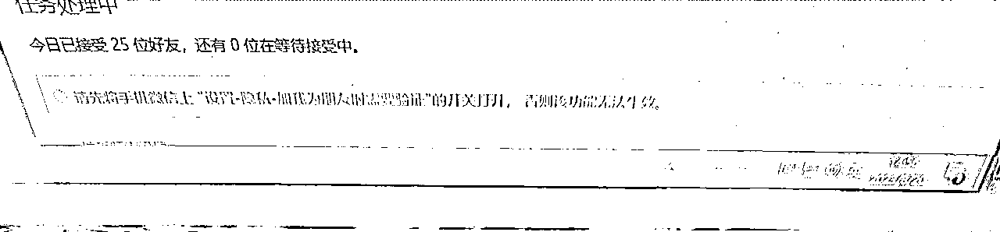
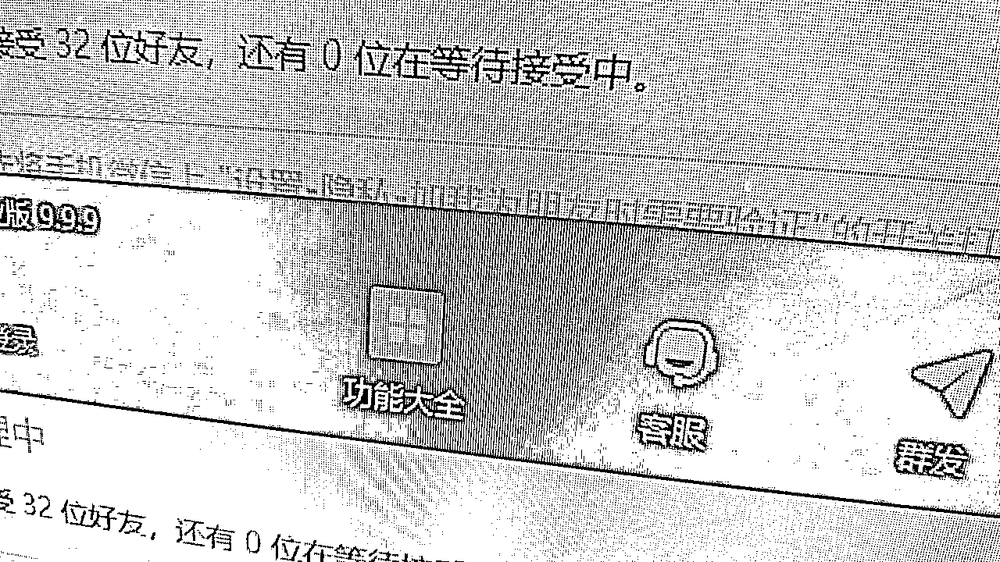
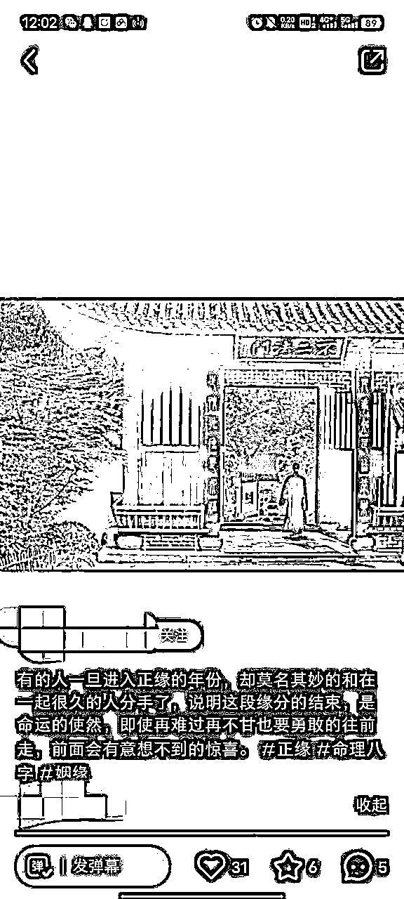
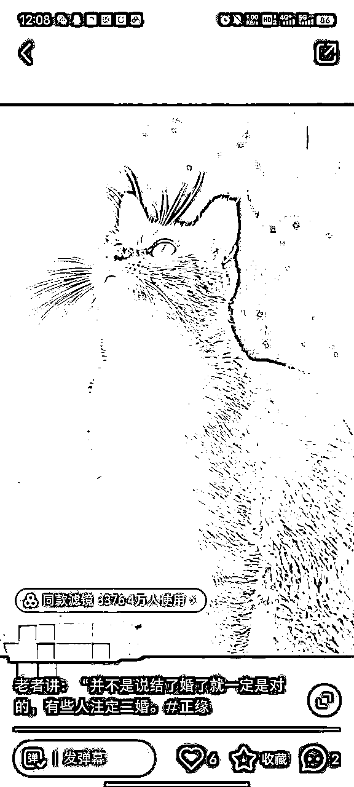
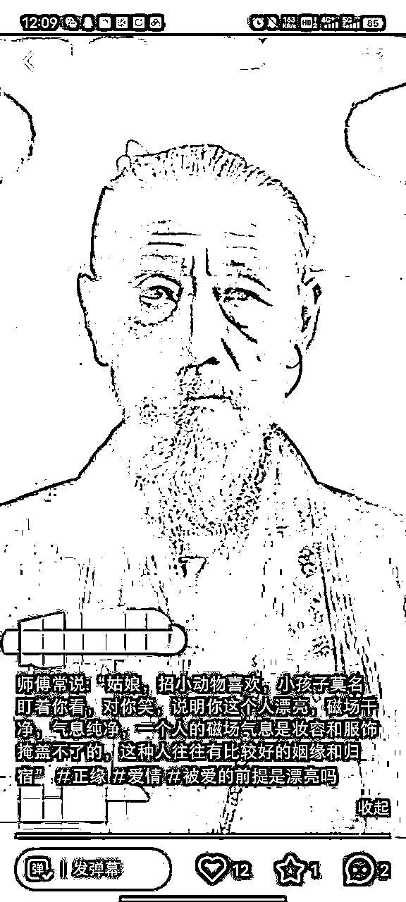
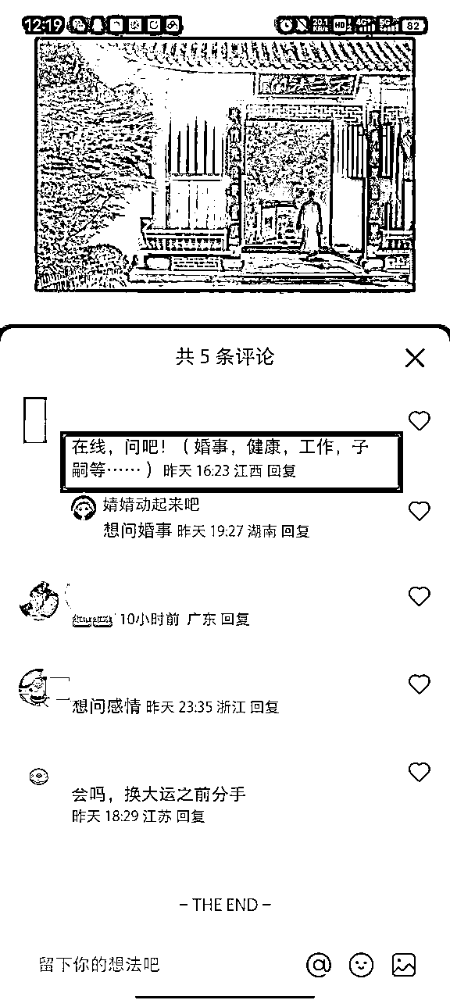
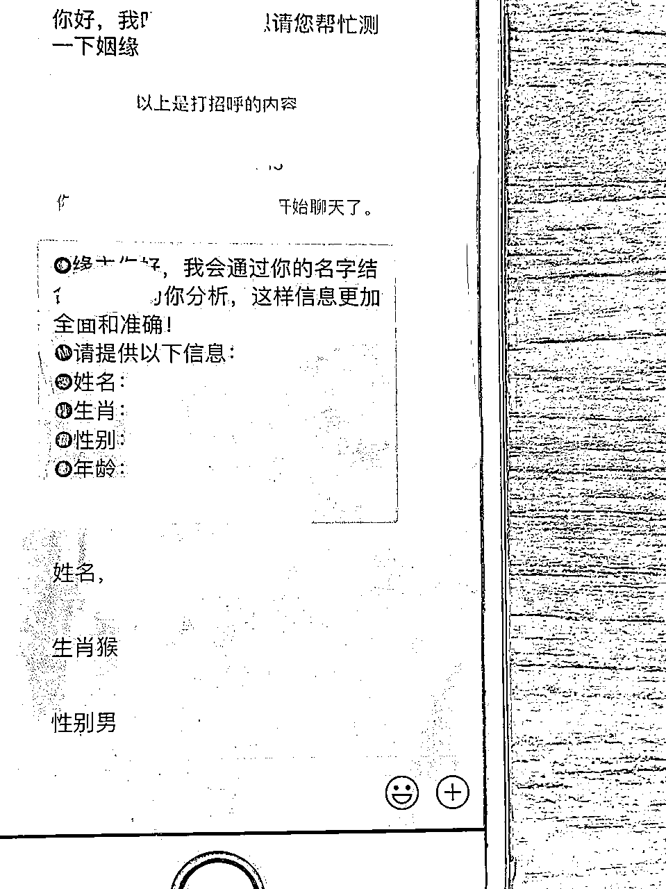

来源：https://wxm1taza3m.feishu.cn/docx/EjsMdOQrJonP1pxanq5c5NI2nmm
大家好，我是行一，02 大学生，大学前三年赚到人生第一个百万，目前一家小红书电商工作室，一家流量公司。流量公司主要是引流私域直营，主攻国学粉和商业粉，给自己定位流量操盘手。
今天是自己梳理小红书国学流量打法，来了一个新地方就一直在干，啥都没总结，这次希望我的国学小红书流量实战sop对大家在小红书获客有帮助，无保留分享。
目前国学引流成绩


因为这个类目对号要求比较多，我愿意分享出来，对圈内家人有帮助就行了，我是个在路上的流量操盘手。
目录
一、小红书账号配置
二、养号三天法
三、小红书对标账号拆解
四、国学违规词
五、国学引流路径
六、国学私域营销
七、说说我对国学的想法
准备至少两个账号，开始养号，保持好心态，测试数据来看养号的比不养号爆的快
1.注册好账号，尽量一机一卡一号，如果是批量起号，不要连接wifi。
2.注册时会有一个页面让你选择年龄和兴趣爱好，尽量选择20以上人喜欢的类目，方便系统给你手动打标签的机会。
3.刷对标账号
（在小红书的搜索栏里输入关键词比如：正缘，财运等）早中午各刷10分钟。
（找粉丝越多的账号关注点赞，收藏多互动，后续容易让系统推荐）
强提醒：注册账号时⼀定⽤流量，不要⽤⽆线，不然你所有的号⼀个IP地址，账号就会被判定为营销号，流量起不来（我们团队的⼯作机，团队wifi都没连过，还偶尔带出去溜溜，装的像个正常⼿机就⾏）
1.确定账号定位，完成基础设置
2.进行浏览同领域的对标（早中晚各自10分钟即可）浏览时不要刷的太快
1.继续浏览同领域的对标（早中晚各自10分钟即可）浏览时不要刷的太快
2.关注署管家
3.编辑好明天的发布视频（图文）准备发布养号结束的一个月内需要天天发，保证输出质量，有利于系统推荐
注：发布后不要自己频繁浏览自己作品，不要过度解读数据！发内容只为提高账本号权重，观察数据可以在商家后台观看
目前我团队做的就三种形式，建筑，猫和狐狸，古人

制作：建筑图片＋bgm＋模糊特效（控制7s）

制作：猫图片＋bgm＋模糊特效（控制7s）

制作：ai古人图片＋bgm＋模糊特效（控制7s）
以下仅供参考，实际以测试发布为主
⼗⼆⽣肖：直接不要出现。或者12笙箫
⽣肖：可以⽤笙箫
⿏、⽜、⻁、兔、⻰、蛇、⻢、⽺、猴、鸡、狗、猪：⽤图形代替
财：出现财字都进⾏修改，⽤符号代替，或者⽤拼⾳⾸字⺟代替，也可⽤同⾳字。例如：C 采
例如：昀 Y
运势：晕势
事业运：事业韵
命：命这个字出现了就⽤⾸字⺟或同⾳字代替，例如：M 名
姻缘：⽤同⾳字代替，例如：⾳源、因源
旺夫旺⼦：旺字只要出现，必须替换。⽤拼⾳代替，例如： W
贵⼈：贵字需要替换掉，⽤⾸字⺟或同⾳字代替。例如：G 圭
防⼩⼈：⼩⼈⽤⼈物图标代替，或者防⼩⼈直接不打出来
桃花：⽤桃花图片代替
宗旨：跟命理相关的词 直接拼⾳⾸字⺟代替、图标代替，或者直接不要打出来，因为⽤⼾听声⾳也能够辨别出来

在线问吧！（婚事，健康，工作，子嗣等……）
客⼾说：能看看姻缘/财运/事业吗？
回复：可以的，缘主，这有很多字我不能打，⽅便的话可以+下我的威。
紧接着发微信号：123456
朋友圈和话术跟同行学习即可

缘主您好，请问想看下什么呢
好的，缘主。你的姓名和生辰信息给我下呢
缘主，因为法不空出，老师这边会象征性的收取一点法金。
收到。我这边推演完了给你语音解答。
国学易经课程，这是最好的后端
没有风险，只要有流量，可以自己去对接
特别强调：
1.后端对接尽量找靠谱的师傅，防止有问题，或者用国学的课程对接
2.每⼀个愿意加微信的客⼾，就是潜在客⼾，今天不转化，总有 ⼀天转化，经常沟通，关怀。维护客⼾关系。
在这还要强调一件事，由于行业特殊性，如果不是后端国学课程，是国学文化，作为分享者的我，对于用我方法去引流造成的后端问题，分享者不承担任何责任。此句具有法律效应。
做国学，我希望大家都是为了弘扬国学传统文化，以及赚的钱要去多行好事，感谢这个行业带来的机会，带来的财富。
我自己国学团队文化，就是真诚利他，以人为本，一切的目的是解决用户需求。好的团队文化决定一个团队的长久性。
写这篇文章，是一些圈友看到我分享小红书电商时说为啥国学项目停了，特地来问我，我现在已经捡起来了，在长沙搭建了自己国学团队。
圈友的学习钻研能力真强，通过关键词还找到我，还有一个圈友是道士，聊的还可以，跑我公司来找我了，真的有些就是缘分，感谢社群这样一个大平台。
这里也希望多跟一些国学玩的好的大佬交流，希望有国学课程后端可以合作，选择国学赛道也是看了"非标品，高利润，复购“，未来是想往国学课程发展，目的还是为传统文化献出自己的一份力，做事的过程赚点钱，欢迎来交流。